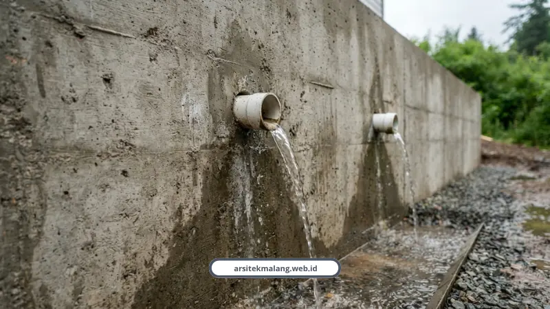

Ringkasan Inti
- Retaining wall rumah adalah struktur penahan wajib di lahan lereng Batu Malang guna menahan dorongan lateral tanah dan resapan air hujan pemicu longsor.
- Karakteristik tanah lereng Batu (silty sand) berkohesi rendah (c = 1,78 kN/m²) memiliki Safety Factor kritis 0,68 tanpa perkuatan, jauh di bawah standar aman SNI 8460:2017 (minimal SF 1,50).
- Kombinasi Cantilever Retaining Wall dengan sistem terasering dua trap terbukti meningkatkan SF menjadi 1,52 dan menekan settlement hingga 15,40 mm.
- Sistem drainase weep hole pipa PVC 2 inci dan drainase longitudinal PVC 6 inci wajib dipasang guna mereduksi akumulasi tekanan hidrostatik air.
Daftar Isi Artikel
Retaining wall rumah adalah struktur wajib untuk lahan lereng di Batu Malang karena menahan tekanan tanah dan air hujan yang bisa memicu longsor. Tanpa perhitungan struktur yang presisi, fondasi rumah di lereng curam berisiko bergeser bahkan sebelum masa huni sepuluh tahun.
Kenapa Lereng di Batu Rawan Longsor Kalau Tanpa Retaining Wall?
Wilayah perbukitan Batu dan Malang didominasi lereng curam dengan curah hujan tahunan yang lumayan tinggi, mencapai 401-500 mm per bulan. Kombinasi ini yang bikin tanah gampang jenuh air.
Sampel tanah di kawasan lereng Batu, misalnya di Songgokerto dan Jalan Trunojoyo, tergolong jenis silty sand atau pasir berlanau dengan kohesi sangat rendah (c = 1,78 kN/m²) dan sudut geser 29 derajat. Karakteristik tanah seperti ini gampang longsor kalau nggak diberi perkuatan.
Peneliti geoteknik dari Universitas Negeri Malang, Satria Aji Nugraha dan Eko Suwarno, mencatat kondisi ini secara spesifik:
“Pada karakteristik tanah silty sand berkohesi rendah di kawasan Batu, lereng curam berada dalam kondisi kritis dengan SF 0,68. Penggunaan perkuatan dinding penahan tanah tipe kantilever setinggi 11 meter yang dikombinasikan dengan terasering dua trap terbukti meningkatkan angka keamanan keseluruhan menjadi 1,52.”
Sebagai catatan, Peraturan Daerah Kota Batu No. 7 Tahun 2011 memang melarang pembangunan di kawasan rawan longsor tanpa mitigasi teknis, dan mewajibkan perlindungan konservasi pada lereng dengan kemiringan di atas 40 persen.

Berapa Angka Keamanan Lereng yang Dianggap Aman?
Berdasarkan SNI 8460:2017, lereng dinyatakan aman kalau Faktor Keamanan atau Safety Factor-nya minimal 1,50. Di bawah angka itu, lereng masuk kategori kritis dan wajib diberi perkuatan struktur.
Sebagai gambaran nyata, lereng di Songgokerto Batu tanpa perkuatan punya SF kritis 0,68, jauh di bawah standar aman. Sementara di Tirtoyudo, SF-nya 1,191, masih di bawah ambang aman meski nggak sekritis Songgokerto.
Setiap perancangan retaining wall juga wajib lolos lima pengujian stabilitas berikut:
- Stabilitas guling, minimal SF 2,0.
- Stabilitas geser lateral, minimal SF 1,5.
- Daya dukung tanah, minimal SF 3,0.
- Penurunan pondasi atau settlement, maksimal 16,5 mm.
- Stabilitas keseluruhan, minimal SF 1,5.
Dosen Teknik Sipil ITN Malang, Eri Andrian Yudianto dan Eding Iskak Imananto, menegaskan bahwa lereng eksisting tanpa dinding penahan di wilayah Malang umumnya berada pada kondisi tidak aman dengan SF di bawah 1,5.
Catatan Arsitek Malang
Pembangunan dinding penahan tanah di kawasan perbukitan Batu wajib diawali dengan uji tanah geoteknik (sondir/deep boring) untuk memastikan kedalaman lapisan tanah keras dan elevasi muka air tanah. Hal ini krusial agar dimensi pelat dasar (footplate) kantilever mampu menahan momen guling dan geser lateral saat tanah jenuh air pada puncak musim penghujan.
Jenis Retaining Wall Apa yang Paling Cocok untuk Lahan Lereng?
Nggak semua jenis dinding penahan tanah cocok dipakai di semua kondisi lereng. Ini beberapa tipe yang paling umum diterapkan:
- Cantilever Retaining Wall, dinding beton bertulang berbentuk T atau L yang memanfaatkan berat tanah di atas pelat dasar sebagai penyeimbang. Efisien untuk lereng setinggi 8 sampai 11 meter.
- Inovasi terasering dua trap, kombinasi dinding kantilever dengan sistem terasering bertingkat yang terbukti mendistribusikan beban lebih merata dan menekan penurunan pondasi sampai 15,40 mm sesuai standar SNI.
- Gravity Wall atau turap batu kali, mengandalkan berat sendiri material, cocok untuk lereng skala kecil atau ketinggian rendah.
Peneliti struktur geoteknik Suhudi dan Ehok menyebut dinding penahan tanah tipe kantilever terbukti sangat relevan untuk menstabilkan kawasan lereng berkontur rentan di wilayah perbatasan Batu-Pujon.
Kenapa Sistem Drainase Sepenting Dinding Penahannya Sendiri?
Penyebab utama kegagalan retaining wall itu bukan selalu soal kekuatan struktur, tapi penumpukan air di belakang dinding yang menciptakan tekanan hidrostatik tinggi. Tekanan inilah yang memicu retakan sampai kelongsoran.
Karena itu, setiap retaining wall wajib dilengkapi dua komponen drainase berikut:
- Weep hole, pipa PVC diameter 2 inci setiap 3 meter persegi dinding.
- Pipa drainase longitudinal PVC 6 inci yang dibungkus material granular atau geotextile wick drain.
Insinyur sipil dan konsultan konstruksi, Adam Felix, menekankan bahwa langkah awal yang nggak bisa ditawar sebelum membangun di lereng adalah survei topografi detail dan uji geoteknik seperti sondir atau boring.
Selain itu, dinding penahan juga sebaiknya dipadukan dengan konsep arsitektur yang memang dirancang untuk kontur, seperti pendekatan split level yang saya bahas lengkap di panduan desain rumah lahan miring di Malang. Kombinasi keduanya jauh lebih efisien dibanding membangun retaining wall raksasa untuk menahan denah rumah lahan datar yang dipaksakan.
Retaining wall bukan komponen tambahan yang bisa dianggap remeh di lahan lereng Batu Malang. Dari karakteristik tanah yang berkohesi rendah, curah hujan tinggi, sampai regulasi daerah yang jelas melarang pembangunan tanpa mitigasi, semuanya mengarah ke satu kesimpulan bahwa perhitungan struktur yang presisi itu wajib, bukan pilihan.
Kalau Anda punya lahan berkontur di kawasan Batu, Dau, atau sekitarnya dan butuh perhitungan retaining wall yang sesuai standar SNI 8460:2017, tim kami siap membantu dari tahap survei sampai desain struktur. Cek layanan kami di sini untuk mulai konsultasi.
FAQ (Pertanyaan Sering Diajukan)
Apakah semua rumah di lahan miring wajib pakai retaining wall?
Tidak semua, tapi wajib untuk lereng dengan kemiringan signifikan atau dinding penahan tanah setinggi 2 meter atau lebih sesuai Perda Kota Malang No. 1 Tahun 2004. Untuk lereng landai, terasering ringan kadang sudah cukup asal drainase tertata baik.
Berapa biaya membangun retaining wall untuk rumah?
Biaya bervariasi tergantung tinggi dan jenis dinding, mengacu pada Peraturan Bupati Malang Nomor 84 Tahun 2023, dinding penahan tanah setinggi maksimal 3 meter berkisar belasan juta rupiah per meter lari. Detail rincian biaya per komponen bisa dicek di breakdown biaya lahan miring kami.
Apa tanda-tanda retaining wall yang mulai bermasalah?
Tanda paling umum adalah retakan horizontal pada dinding, air yang tidak keluar lewat weep hole, atau tanah di belakang dinding yang mulai menggembung. Kalau menemukan gejala ini, segera lakukan pemeriksaan struktur sebelum musim hujan berikutnya.
Konsultasikan Pondasi Lahan Kontur Anda di Batu
Rencanakan struktur retaining wall presisi standar SNI dan desain hunian kontur bersama tim arsitek berlisensi IAI Arsitek Malang.

Naura Regyna Putri
Penulis & Tim Riset Arsitektur Maroon Arsitek Malang, spesialis geoteknik lereng, struktur retaining wall, perencanaan rumah lahan kontur, dan legalitas PBG.